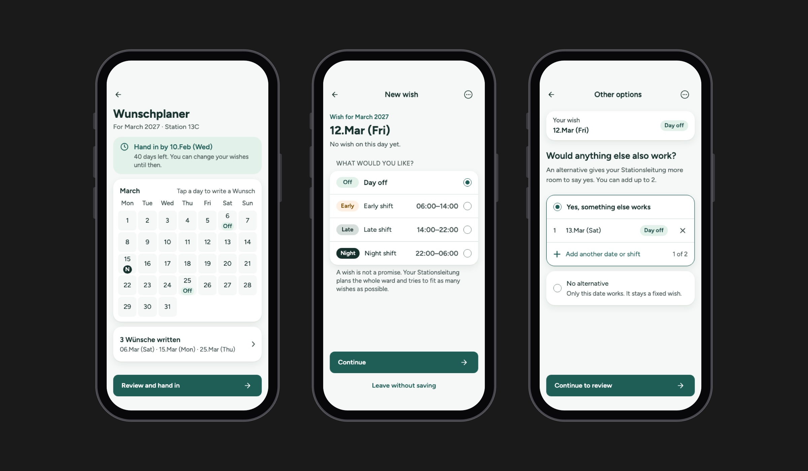
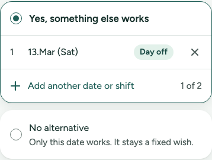
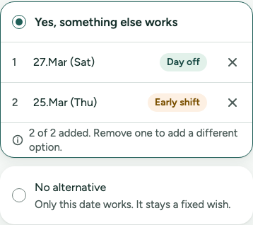
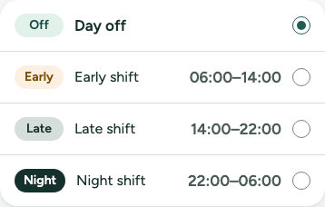
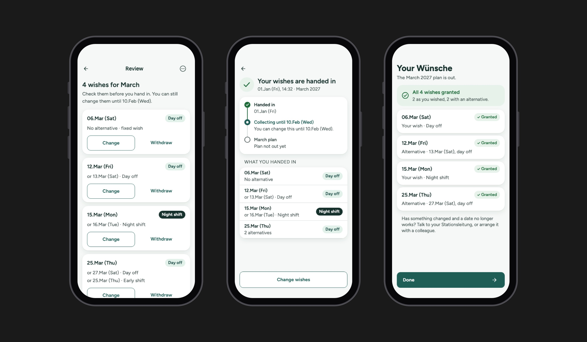
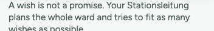
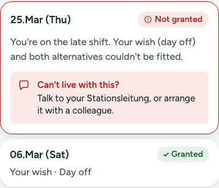
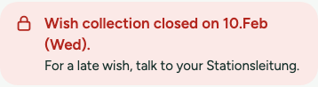

Healthcare · 2026
SpringIn
An AI-assisted design sprint on how nurses ask for time off
Problem
SpringIn started with a guess: nurses in German hospitals lose their time off because of how duty rosters are made, through late plans, changes after publication and calls on days off. Before designing anything, I ran a design sprint to find out whether scheduling was really where the problem started, and for whom.
Research
I interviewed registered nurses, including a float pool nurse and a nurse who is rarely called in, and the ward managers who build the rosters. I followed up in writing, and added desk research on German rostering rules and national staffing data. Every hypothesis had written criteria for what would support or contradict it.
- 5Participants
- 8Hypotheses tested
- 14Concept directions
The founding guess mostly didn't hold. Most wishes for days off were granted, and participants traced roster trouble back to too few staff more than to how the plan was made.
How AI shaped this
I built 12 Claude skills, one for each step of the sprint, and ran them in sequence, with each one stopping for my decision. extract-transcript turned every interview into observations, checking each quote against the transcript word for word. draft-affinity-map and draft-insight-statements then grouped them and offered three candidate insights per group, and I chose one.
Insight
A high approval rate hides the wishes nobody writes down.
"I don't write all of them, because there are also other colleagues with family, and our head nurse has to consider them also."
How AI shaped this
draft-problem-frame generated five candidate frames from the insight I picked, and always recommended one with its reason. Each reframe was my call, and every decision, with why I made it, went into a decision log.
Making
Reframing twice before the final design
-
Paper shift swaps only reach the system at month end.
It got as far as a wireframe and felt underwhelming, so I went back to the research.
-
Help the ward manager find someone to cover a shift.
It didn't give nurses any more control over their own schedule.
-
A nurse leaves some wishes unwritten, out of consideration for colleagues.
Both of its claims trace to a participant's own words, and design can reach it without more staff.
A wish with room to move
Each wish can carry up to two alternatives, or be marked as fixed, instead of adding more wishes or fairness rules, which are agreed with the works council and sit outside the design. The nurse held wishes back so her head nurse would have less to weigh. A wish with alternatives gives the head nurse options instead of one more constraint.
InteractiveWrite a wish
Wunschplaner
For March 2027 · Station 13C
MarchTap a day to write a Wunsch
Rebuilt from my Claude Design prototype. Tap a day, then pick a shift.
InteractiveAdd or remove alternatives
Would anything else also work?
An alternative gives your Stationsleitung more room to say yes. You can add up to 2.
Rebuilt from my Claude Design prototype. Tap the buttons as a nurse would.

The components behind it
-

Alternatives, with one added
I added this to the design system. A nurse can list up to two other dates that would also work, or choose “No alternative” if only one date works.
-

Alternatives, with both added
When both spots are used, a short note explains the limit, so nobody wonders why they can't add another.
-

Shift tags
The design system only marked shifts with single letters, like E and L. I added a colored tag with the full name for each shift, so the color is never the only clue.
Honest about what a wish is
The app says plainly that a wish is not a promise, shows no approval status before the plan is out, and keeps colleagues' wishes private, since they're personal data. When a round has closed or a wish isn't granted, it points to talking to the head nurse or a colleague, which is what wards already do, instead of inventing a feature for it.
InteractiveWithdraw a wish, then undo
Check them before you hand in. You can still change them until 10.Feb (Wed).
Rebuilt from my Claude Design prototype. Withdraw any wish; the message stays until you act, so nobody misses the Undo.
InteractiveSee the result once the plan is out
Your Wünsche
Has something changed and a date no longer works? Talk to your Stationsleitung, or arrange it with a colleague.
Rebuilt from my Claude Design prototype. Switch the scenario to see a wish that didn't fit.

The components behind it
-

A note on every new wish
Shown each time someone starts a wish, so it's clear from the start that a wish is a request, not a booking.
-

Results, granted and not granted
Once the plan is out, each wish shows whether it was granted. I reused the design system's status labels and changed their wording. If a wish isn't granted, the card says who to talk to.
-

Wish round closed
After the deadline, the screen says so and tells nurses who to ask about a late wish, instead of just blocking them.
How AI shaped this
draft-concept-directions generated eight directions, then ran a provocation pass for three more that drop the most obvious assumption, which pushed me past the first ideas. draft-garrett took the chosen one from strategy down to wireframe level, and I built the clickable prototype in Claude Design.
Outcome
I delivered a clickable prototype covering the whole wish round, a design rationale that traces every decision to its source, and an implementation document for handoff.
It hasn't been tested yet, and the frame rests on one nurse's words. Next I'd test it with more ward nurses, and with a head nurse to find out whether wishes with alternatives are actually easier to fit into the plan.
How AI shaped this
draft-handoff turned the research, decisions and prototype into the design rationale and implementation document. It names missing inputs, like the success measures we never wrote, instead of filling the gap with guesses.
.say hello
Hiring a product designer who brings AI into the process? Let's talk.
mark.albaran [at] outlook.com
LinkedIn (opens in a new tab)